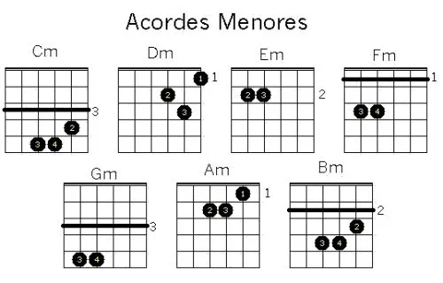

<ion-header [translucent]="true">

  <ion-content class="my-custom-background" [fullscreen]="true">
  
    <link rel="preconnect" href="https://fonts.googleapis.com">
  <link rel="preconnect" href="https://fonts.gstatic.com" crossorigin>
  <link href="https://fonts.googleapis.com/css2?family=Rock+Salt&display=swap" rel="stylesheet">
    <ion-header collapse="condense">    
  </ion-header>

    <div class="colored-div">
      <h1 class="musicalia">Musicalia</h1>
      <h3 class="musicalia2">O app do músico!</h3>
       
    </div>

  <ion-title class="textinho" size="large">Introdução - Acordes Menores</ion-title>
  <ion-button class="voltar"  routerLink="../"> Voltar </ion-button> 


  <ion-card class="introoo">
    <ion-card-header>
      <ion-card-title class="till">Acordes Menores</ion-card-title>
    </ion-card-header>
  
    <ion-card-content>
      Acordes menores são um tipo de acorde que têm uma sonoridade mais "triste" ou "sombria" em comparação aos acordes maiores. A diferença dele para o acorde maior é uma nota, que será nomeada em breve.
    </ion-card-content>
  </ion-card>


<h3 class="notas" size="">A nota que é alterada é chamada de <em>terça</em>, para mais informações, poderá acessar o glossário do app voltando para a tela home. Dependendo do <em>Campo Harmonico</em>, alguns acordes precisão ser menores. </h3>
 

<h3 class="notas2" size="">Percebe-se que apenas uma nota será alterada. os acordes com pestana podem ser evitados de acordo com sua dificuldade....</h3>
<button class="inicio"  routerLink="/tab9"> Começar teste </button> 

</ion-content>